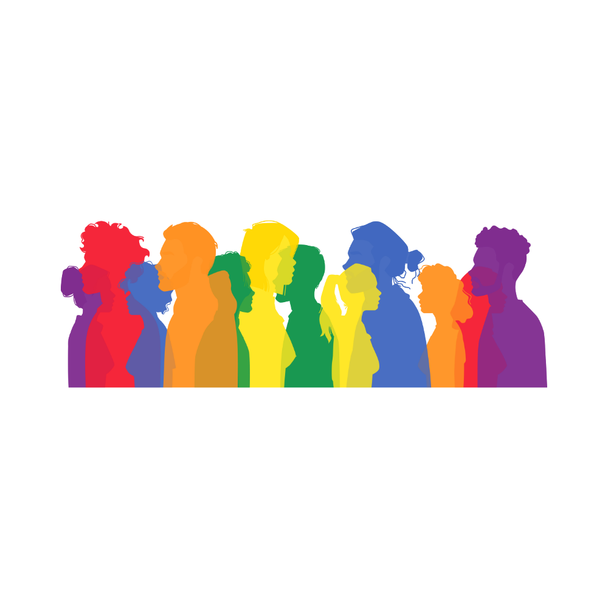
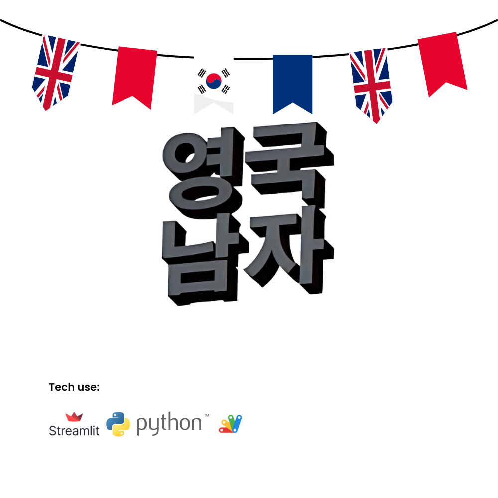
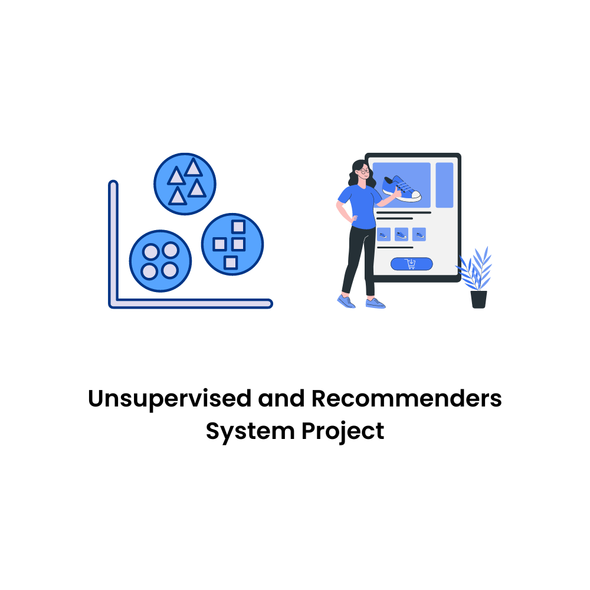
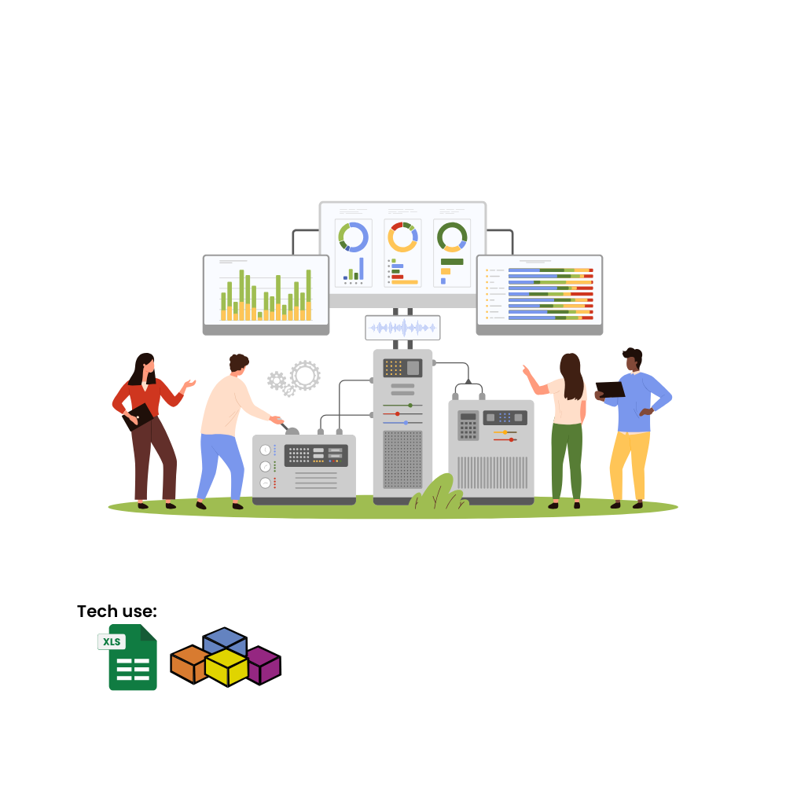

Azriel Alfajr
Research Fellow at Central Bank of Indonesia
I turn complex datasets into analysis that supports macroprudential decisions.
About me
- Work experience
- Research Fellow (2+ years)
Bank Indonesia - Education
- Bachelor's degree in Economics
University of Brawijaya
Economics graduate with strong analytical skills and hands-on experience in data-driven policy analysis. Proficient in Excel, Power BI, and other statistical tools, with a proven ability to process and interpret complex datasets to support strategic decision-making. Currently contributing to macroprudential assessments at Bank Indonesia, supporting executive-level reporting through data processing and literature analysis.
Skills and certifications
Data analytics
- Microsoft Excel, VBA, and Power QueryIntermediate
- Power BI DesktopIntermediate
- Python for Data ScienceIntermediate
- SQLIntermediate
- Looker StudioIntermediate
- R ProgrammingBasic
- StataBasic
Certifications
- Microsoft Certified: Power BI Data Analyst AssociateJun 2024 - Jun 2025
- DataCamp Certified: SQL AssociateJan 2024 - Jan 2026
- TOEFL ITP (510/677)Jun 2023 - Jun 2025
- TRUST Training Partners Certified: IT CertificationIssued Nov 2022
- SKKNI No. 268 Tahun 2020 - Data ManagementIssued Aug 2023
Recent projects
-

People Analytics
-

Korean Englishman Youtube Analytics
-

Credit Risk Prediction
-

K-Means Clustering, Anomaly Detection, and Recommenders System Project
-

Automated Sales Reporting using VBA-Macros
Contact me
The quickest way to reach me is by email.
azrielakbaralfajri@gmail.com